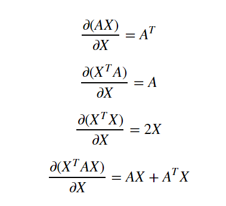

Notes: Introduction to Deep Learning
Table of Contents
Pre-Deep Learning (Basics)
Linear Models as the simplest Neural Networks
They are the building block for Neural Networks.
What’s the difference between non machine learning programming and machine learning?
According to Lawrence Morley (Google AI),
Non Machine Learning programming (traditional programming):
input: Rules and Data
output: Answers
Machine learning (at least supervised learning):
input: Answers and Data
output: Rules
Supervised Learning:
Terminologies (Notations from Introduction to Deep Learning) $ x_i - example \\\ y_i - target\ value\ (label) \\\ x_i = (x_{i1},..,x_{id}) - features\ (d\ of\ them)\ per\ example \\\ X = ((x_1,y_1),(x_2,y_2),…,(x_l,y_l)) - training\ set \\\ a(x) - model,\ hypothesis,\ function \\\ x->a(x)->y^{pred} \\\ $
Types
- Regression: Predict Continuous real valued output.
- Classification: The number of target value is finite. Divide the point into a class (from a given set of classes)
Linear Regression
Try and fit a line (in d-dimensional space) through the data.
$$
a(x) = b+w_1x_1 + w_2x_2 + … + w_dx_d = b+ \sum_{i=1}^{i=d}w_ix_i \\\ w_1,…,w_d - Coefficients\ (weights) \\\ b - bias\ (can\ also\ be\ interpreted\ as\ w_0) \\\ d+1\ parameters \\
$$
We can also think of the same thing in terms of matrices and vector forms
$$ a(x) = w^Tx \\\ where: w = \begin{bmatrix} w_0\\\ w_1\\.\\.\\.\\\ w_d \\\ \end{bmatrix}\ x = \begin{bmatrix} x_0\\\ x_1\\.\\.\\.\\x_l \\\ \end{bmatrix} \\\ To\ apply\ the\ above\ to\ a\ new\ sample\ X \\\ a(X) = Xw \\\ where: X = \begin{bmatrix} x_{11} & … & x_{1d} \\\ : & : & : \\\ x_{l1}& … & x_{ld}\\\ \end{bmatrix} $$ How to know if the line that we come up with is correct? In other words how wrong is the line? What’s the quality of the model? How do we measure it?
To measure that we calculate the loss function $$ Mean Squared Error: \\\ L(w) = (1/l) \sum_{i=1}^{l}(w^Tx_i - y_i)^2 \\\ \ \ = (1/l)\ ||Xw - y||^2 \\\ where\ (||\ \ ||)\ is\ called\ the\ Eucledian\ Norm $$ So with the loss function it is easy to train the model to make it better by minimizing the loss function.
$$
L(w) = (1/l)\ ||Xw - y||^2 -> min_w \ (with\ respect\ to\ w\ ) \\
Exact\ Solution\ (Analytical)\ for\ w: \\
w = (X^TX)^{-1}X^Ty
$$
Derivation of the analytical solution
Some basic derivatives of matrices

source: https://towardsdatascience.com/analytical-solution-of-linear-regression-a0e870b038d5
Dimensions:
$X \implies l*d \\\ y \implies l*1 \\\ w \implies d*1 \\\ \\\ $
Derivation:
$
L(w) = (1/l) ||Xw-y||^2 \\
= (1/l) (Xw-y)^T(Xw-y) \\
= (1/l) ((Xw)^T-y^T)(Xw-y) \\
= (1/l) ((Xw)^T(Xw) - ((Xw)^Ty) -y^T(Xw) + y^Ty) \\
$
Since the second term is a scalar (from its dimensions), we can take the transpose of the term
$
= (1/l) (w^TX^TXw - 2y^TXw+y^Ty) \\
$
Partial differentiation with respect to w, we have:
$
\frac{\partial L(w)}{\partial w} = (1/l) (X^TXw+X^TXw-2X^Ty) \\
$
Equating it to zero to minimize it:
$
X^TXw = X^Ty \implies w = (X^TX)^{-1} X^Ty
$
Taking inverse of a very high dimension matrix is hard!!!
This can also be seen as solving for a system of linear equations, but that is still computationally hard.
Therefore we need a more generic and scalable learning method.
Linear Classification
Binary Classification
Implies there are only two classes (only two target values). We basically try to draw a line (in d-dimensional space) to separate the classes.